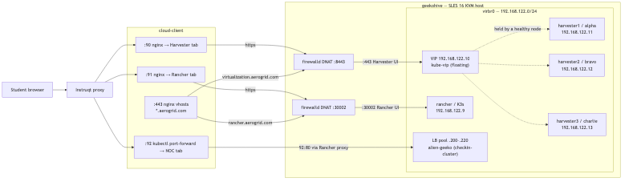

rodeo-cli — Architecture & design¶
Technical reference for contributors and maintainers. For deploying a workshop, see User guide.
Version: 0.14.2 License: GPL-3.0-or-later
What rodeo-cli is¶
rodeo-cli deploys the infrastructure for a rodeo: a live, hands-on workshop where attendees work against real systems. It builds a lab of nested KVM VMs on a single Linux host, driven by a declarative plan — you pick a profile, it converges the host.
The stack it builds depends on the chosen engine type (see Engine types & profiles):
suse-virt— a 3-node Harvester HCI cluster (+ optional Rancher Prime)rancher— a single VM running Rancher Prime on K3ssuse-edge— Rancher Prime + Elemental + Edge Image Builder + edge nodes
Every profile shares the same foundation: host networking, firewalld DNAT, DNS, storage, and phase orchestration on nested KVM/libvirt. The tool runs on cloud instances, Instruqt builder VMs, local VMs, or bare metal — anywhere you have KVM and enough RAM/disk.
Design goals¶
| Goal | How it is met |
|---|---|
| Declarative lab definition | rodeo-plan.yaml + secrets + -P / --paramfile |
| Plan before apply | rodeo plan (read-only diff vs host) |
| Safe resume | Per-plan state, --from PHASE, --force |
| One orchestrator | DeployRunner — no duplicated TUI/plain/bash paths |
| Host setup is idempotent | Ansible roles kvm_host + vms + pxe_server |
| Long waits are cancellable | threading.Event + process groups in poll loops |
| Instruqt-safe builds | deployment_target: instruqt skips finalise; hostimage boot uses start-if-needed |
| Self-contained install | Ansible roles bundled in rodeo/data/ansible/ |
| Minimal first-phase friction | scripts/bootstrap-sles.sh (curl |
| Graceful stop/restart + host reset | rodeo stop/start (infra-aware from definition: infra_type, components, start_order; graceful ACPI + host services; restartable). clean --all --hard --secrets --force-network for full reset (VMs/networks/states/passwords; no package removal). Clean runs stop first unless --hard. |
| Interactive definition generation | rodeo generate (templates base via parameter collection for hybrid customization, produces full config-dir yaml skeleton with project conventions like infra_type; post-validation via load_config; next steps for bootstrap/deploy/stop/start/clean lifecycle). Enables consistent entry to declarative model (definition as source for inventory/renderer/phases). |
Vision (roadmap): Declarative lab deployment — declare desired state, preview diff, converge, destroy what you own. See ROADMAP.md.
Two-dimension model¶
rodeo-cli has two independent axes that combine to produce a lab deployment:
Tech platform × Host context = lab deployment
suse-edge baremetal SUSE Edge 3.6 on bare metal KVM
suse-edge instruqt SUSE Edge 3.6 on Instruqt KVM
suse-virt instruqt SUSE Virtualization on Instruqt KVM
rancher aws Rancher on an AWS EC2 KVM host
Tech platform — what lab topology and software stack to deploy. Encoded in rodeo/profiles/<name>.py + data/platforms/<name>/definition.yaml. Platform code is host-agnostic; the same profile works on any host context.
Host context — where the KVM host runs and what that implies for host-level setup. Encoded in deployment_target in rodeo-plan.yaml. Affects: guarded phases, firewall/DNAT configuration, external IP detection, success screen output, and infra adaptation (rodeo/host_context.py): resource floors, disk backend, guest cache/io. Acquire can be provisioned or BYO; both converge through the same overlays. The underlying infrastructure is always KVM/libvirt regardless of host context.
deployment_target |
Host type | Key differences |
|---|---|---|
baremetal |
Linux bare metal with KVM | full firewalld + DNAT; optional disk-space warn |
instruqt |
Instruqt managed KVM builder | finalise guarded; vCPU/RAM presets (~70% host) |
aws |
Provisioned EC2 or BYO on EC2 | provider: + destroy; disk_gb floor 1200; NVMe → image_dir |
gcp (planned) |
GCP instance with KVM | external IP via GCE metadata; VPC firewall rules |
Acquire vs adapt. Host acquire can be provisioned (rodeo up --target aws / Fleet provider:) or BYO (SSH inventory / operator-created EC2). Both must hit apply_host_context() before deploy so workshops do not fork playbooks per cloud. Tech platform declares what lab; host context declares where and how the host must be shaped.
Adding a new host context requires: config.py allowed list, up_cmd.py auto-detection, runner.py vars file, success.py output, and an overlay in host_context.py. See the Extension points table below.
Engine types & profiles¶
Two terms that sound alike but are different:
- Engine
type— the deploy pipeline: which phases run and how. Code lives inrodeo/profiles/<name>.py(aRodeoProfilesubclass) +data/platforms/<name>/definition.yaml. There are three today. - Profile (
--profile) — a named, runnable lab (a config-dir, bundled or under~/.rodeo/profiles/). Each profile picks one engine type. There are six bundled ones.
Since PR #4 the three profile classes are thin: RodeoProfile (profiles/base.py) owns config assembly (default_cfg() — loads the definition with a static fallback) and phase dispatch (a table-driven run_phase() with a no-Rancher skip guard). Each subclass carries only its data and deltas — static_vms, resources, versions, and small hooks like extra_cfg() / _default_user().
The three engine types¶
| Engine type | Phase pipeline | Boot method | Stack |
|---|---|---|---|
suse-virt |
kvm_host → vms → pxe_server → cluster → rancher → apply → finalise |
iPXE network install (UEFI) | Harvester HCI cluster (+ optional Rancher Prime) |
rancher |
kvm_host → vms → boot → rancher → apply → finalise |
cloud-init image | 1 VM: Rancher Prime on K3s |
suse-edge |
kvm_host → vms → boot → rancher → elemental → apply → finalise |
cloud-init image | Rancher Prime + Elemental Operator + EIB + edge nodes |
The Harvester path is the outlier: it needs pxe_server (iPXE/TFTP/HTTP) and a cluster phase that network-installs each node and waits for the VIP. The cloud-image profiles skip both — a single boot phase starts the network and VMs directly. suse-edge adds one phase, elemental, which installs the Elemental Operator after Rancher so edge nodes can register over TPM. rancher/elemental phases are skipped automatically when a topology has no Rancher node.
Bundled profiles¶
| Profile | Engine type | Topology |
|---|---|---|
rancher |
rancher |
1 VM: Rancher Prime on K3s |
test |
suse-virt |
2-node Harvester, no Rancher |
harvester-ha |
suse-virt |
3-node Harvester, no Rancher (etcd HA) |
harvester-2n |
suse-virt |
2-node Harvester + Rancher Prime |
harvester |
suse-virt |
3-node Harvester HCI + Rancher Prime |
suse-edge |
suse-edge |
Rancher + Elemental + EIB + 4 edge nodes (SUSE Edge 3.6) |
Per-profile topology tables (VMs, IPs, RAM) live in each deployment guide. The detailed suse-virt topology and iPXE boot chain are documented below as the reference implementation.
High-level architecture¶
┌─────────────────────────────────────────────────────────────┐
│ CLI (click) │
│ init · plan · deploy · status · clean · ssh · logs · … │
└──────────────────────────┬──────────────────────────────────┘
│ load_config() + validate_config()
▼
┌─────────────────────────────────────────────────────────────┐
│ Profile (e.g. SuseVirtProfile) │
│ phases · vm_names · guarded_phases · run_phase() │
└──────────────────────────┬──────────────────────────────────┘
│
▼
┌─────────────────────────────────────────────────────────────┐
│ DeployRunner.run() → Iterator[DeployEvent] │
│ PhaseStarted · LogLine · ProgressUpdate · PhaseDone · … │
└───────┬─────────────────────────────┬───────────────────────┘
│ │
▼ ▼
┌───────────────────┐ ┌─────────────────────────────┐
│ Ansible phases │ │ Python phases (per profile) │
│ kvm_host, vms, │ │ boot · cluster · rancher · │
│ pxe_server │ │ elemental · apply · finalise│
│ ansible-playbook │ │ ClusterPhase · RancherPhase │
│ -e @vars-file │ │ LibvirtDriver │
└───────────────────┘ └─────────────────────────────┘
│ │
▼ ▼
┌─────────────────────────────────────────────────────────────┐
│ KVM host (SLES 16 / Leap / Ubuntu / Fedora) │
│ libvirt · firewalld · virbr0 · 4 nested VMs │
└─────────────────────────────────────────────────────────────┘
Consumers of the event stream:
rodeo/app.py— Textual TUI (DeployPanel + LogsPanel)rodeo/commands/deploy.py— Rich plain output
Neither contains pipeline logic. Both subscribe to the same DeployRunner generator.
Why Ansible and Python (not one or the other)¶
| Layer | Tool | Rationale |
|---|---|---|
| Host packages, systemd, firewalld, sysctl | Ansible | Declarative idempotency; SLES 16 edge cases already encoded in roles |
| VM disks, ISOs, XML, cloud-init, network XML | Ansible | Template + file generation; community.libvirt modules |
| iPXE boot server (nginx, dnsmasq, boot files) | Ansible | pxe_server role; two-stage UEFI → TFTP → HTTP |
| VM start order, VIP poll, kubeconfig, nodes Ready | Python | 20–90 minute waits, progress UX, cancellation |
| K3s, Rancher API, cluster import | Python | Procedural API sequence; structured errors |
| Runtime VM ops (status, clean, restart) | libvirt-python | Direct API; avoids virsh where possible |
Bash deploy scripts (start-vms.sh, setup-rancher.sh, deploy.sh) were retired in v0.3. Logic lives in engine/cluster.py and engine/rancher.py.
Do not replace Ansible roles with Python without a live KVM regression. The fragile Instruqt boot-order behavior is in the roles.
Repository layout¶
rodeo/
├── cli.py Click entry; ConfigError handler
├── config.py Plan load, Jinja, -P/--paramfile, secrets, validation
├── state.py ~/.rodeo/state/<plan-name>.yaml (profiles own phase lists; `reset_from` requires phases arg)
├── ssh.py Shared SSH opts + helpers (used by engine + commands)
├── app.py Textual TUI (event subscriber only)
├── engine/
│ ├── runner.py DeployRunner, vars file, phase dispatch helpers
│ ├── cluster.py ClusterPhase
│ ├── rancher.py RancherPhase
│ └── libvirt.py LibvirtDriver
├── profiles/
│ ├── base.py RodeoProfile — shared config assembly + phase dispatch
│ ├── rancher.py Rancher Prime on K3s (1 VM)
│ ├── suse_virt.py Harvester HCI + Rancher (default workshop profile)
│ └── suse_edge.py SUSE Edge 3.6 (Rancher + Elemental + EIB + edge nodes)
├── commands/ Thin CLI wrappers
├── service/ JSON report helpers (doctor, status) for CLI + fleet
├── fleet/ Laptop→host workshop fan-out (OpenSSH; see docs/fleet.md)
├── widgets/ TUI panels
└── data/
├── platforms/ definition.yaml per tech platform (suse-virt, suse-edge, rancher)
├── ansible/ kvm_host + vms + pxe_server roles (bundled)
├── examples/ reference rodeo-plan.yaml per platform (not workshop content)
├── deployer/ inventory.local + legacy examples
└── templates/ init templates
tests/ pytest (config, runner, cluster, ansible contract, fleet, …)
docs/ architecture.md, get-started.md, fleet.md, …
Deployment pipeline¶
Each engine type runs a subset of the phase catalog below, in the order given by its profile's phases list (see Engine types & profiles). State is per plan name (cfg["name"]). The dispatch is generic: RodeoProfile.run_phase() sends Ansible phases to stream_ansible and the rest through a phase → DeployRunner method table.
| Phase | Engine | Used by | Summary |
|---|---|---|---|
kvm_host |
Ansible | all | KVM packages, modular libvirt, NM unmanaged conf, firewalld rules (not started), storage pool, sysctl |
vms |
Ansible | all | Download ISOs/images, virbr0 + DHCP leases, qcow2 disks, config ISOs, define domains (not start); disk-first boot order |
pxe_server |
Ansible | suse-virt |
nginx on virbr0:8080, ipxe.efi TFTP, vmlinuz/initrd/rootfs, per-node iPXE scripts + config YAMLs, dnsmasq two-stage boot |
boot |
DeployRunner |
rancher, suse-edge |
Start virbr0 + cloud-image VMs directly (no iPXE); wait for IPs |
cluster |
ClusterPhase |
suse-virt |
firewalld on; virbr0 up; start h1 → VIP → h2 → 90s → h3 → rancher; kubeconfig; 3 nodes Ready |
rancher |
RancherPhase |
all | K3s, Helm, cert-manager, Rancher Prime, admin API. Skipped if no Rancher node. Harvester import is a lab exercise. |
elemental |
RancherPhase._install_elemental |
suse-edge |
Install Elemental Operator (CRDs + operator) so edge nodes register over TPM |
apply |
DeployRunner |
all | Apply extra manifests (Fleet GitOps, demo workloads); never cached, re-runs each up |
finalise |
DeployRunner |
all | VM autostart + libvirt-guests enable |
The suse-virt pipeline (the widest) is the reference implementation detailed in the sections below. rancher and suse-edge swap the pxe_server/cluster pair for a single boot phase on cloud images; suse-edge adds elemental.
Timeouts (nested KVM): VIP ≤ 60 min, kubeconfig ≤ 30 min, nodes Ready ≤ 90 min.
Instruqt guard: finalise is in guarded_phases. Skipped when deployment_target: instruqt unless --finalise. Do not bake finalise into a hostimage (agent / boot hang); use rodeo start-if-needed on track setup. See docs/examples/instruqt.md.
Configuration system¶
Precedence (lowest → highest)¶
_BASE_DEFAULTSinconfig.py- Profile
default_cfg()(e.g.SuseVirtProfile) rodeo-plan.yaml(Jinja-rendered if templated)--paramfile(deep merge, tfvars-style)-P dotted.path=value(CLI overrides)
Jinja plans¶
StrictUndefined — missing parameters fail at load time, not mid-deploy.
Secrets (?? placeholders)¶
Resolved at load time from ~/.rodeo/secrets.yaml, ??env:, ??file:, or ??cmd:. validate_config() fails closed on unresolved or empty credentials. (Note: rodeo generate now guards the global secrets file with exists check + warning to avoid silent clobber.)
Passwords go to Ansible via a mode-600 vars file (-e @file), never on argv. Password-bearing Ansible template tasks use no_log: true.
Ansible vars file (DeployRunner._write_vars_file)¶
Generated per deploy. Keys Ansible actually consumes:
libvirt_flavors(nested — matchesvm.xml.j2,images.yml)lab_dns_domain(notdns_domain)harvester_version,harvester_iso_checksum(version-keyed map)- network, passwords,
image_dir, optionalharvester_token
State¶
~/.rodeo/state/<plan-name>.yaml — phase completion, timestamps, last_error. chmod 600.
rodeo deployskips completed phasesrodeo deploy --from PHASEclears that phase and laterrodeo deploy --forceignores state
Event model¶
DeployRunner.run() yields:
PhaseStarted(phase)
PhaseSkipped(phase, reason) # "done" | "before_start" | "instruqt"
LogLine(line)
ProgressUpdate(step, elapsed, total, detail)
PhaseDone(phase, elapsed)
PhaseFailed(phase, rc, message)
DeployComplete()
Failure semantics:
- Exceptions in
profile.run_phase()→PhaseFailed, pipeline stops runner.stopchecked in all poll loopsrunner.terminate()SIGTERMs subprocess group (TUI quit → exit 130)- Subprocess timeouts in RancherPhase → failed rc, not uncaught exceptions
Workshop topology (suse-virt)¶
| VM | Role | IP | Default RAM |
|---|---|---|---|
| harvester1 | Bootstrap (alpha) | 192.168.122.11 | 20 GiB |
| harvester2 | Join (bravo) | 192.168.122.12 | 20 GiB |
| harvester3 | Join (charlie) | 192.168.122.13 | 20 GiB |
| rancher | Rancher Prime / K3s | 192.168.122.9 | 8 GiB |
- VIP: 192.168.122.10 (Harvester API/UI via kube-vip)
- DNS domain:
rodeo.lab(libvirt dnsmasq +/etc/hosts) - Host DNAT: :8443 → Harvester VIP :443, :30002 → Rancher NodePort

Editable source: assets/diagrams/rodeo-network-ports.mmd
The diagram shows the full path from a student browser through Instruqt cloud-client nginx tabs, host firewalld DNAT on geekohive, and virbr0 guests (VIP, Harvester nodes, Rancher, optional LB pool).
VM IPs/user for Python-side ops (ssh, restart, status, cluster waits) come from profile default_cfg() + plan vms (profile-driven in TUI panels too). Full vm_nodes (MACs/UUIDs/flavors + provisioning) still from roles/vms/defaults/main.yml (Ansible side). Custom topologies / single inventory source on the roadmap (Phase C). TUI LogsPanel and phase focus now derive VM list from cfg/profile instead of hardcodes.
Harvester install via iPXE (not ISO-first boot)¶
Harvester 1.8.1 requires UEFI; legacy BIOS PXE is not supported. The pxe_server role provisions network boot on virbr0:
UEFI firmware (empty disk, no bootloader)
→ DHCP from dnsmasq on 192.168.122.1
→ Stage 1: boot ipxe.efi (TFTP) [dhcp-boot tag:!ipxe]
→ Stage 2: ONE generic boot.ipxe over HTTP [dhcp-boot tag:ipxe]
→ boot.ipxe chains to the per-node script by MAC: :8080/ipxe/mac-<mac>
→ kernel + initrd + squashfs over HTTP (installer console logged to ttyS1)
→ unattended install (config YAML at :8080/config/config-harvesterN.yaml)
The per-node routing is MAC-based, not per-host dnsmasq tags: libvirt already
writes a <host mac=…> for each node's IP, and a second dhcp-host for the same
MAC (to set a routing tag) is silently ignored by dnsmasq — so all iPXE clients
get one boot.ipxe, which selects the node script by ${net0/mac:hexhyp}.
VM XML boot order is disk first, management NIC second. On first boot the qcow2 is empty, so UEFI falls through to NIC PXE. After install, reboots go straight to disk. ISO CDROMs remain attached as fallback; RancherPhase ejects them once the cluster is up.
On-disk layout after pxe_server:
| Path | Purpose |
|---|---|
/var/lib/libvirt/dnsmasq/ipxe.efi |
Stage-1 UEFI loader (TFTP) |
/srv/harvester-pxe/harvester/ |
vmlinuz, initrd, rootfs.squashfs, ISO symlink |
/srv/harvester-pxe/ipxe/boot.ipxe |
Generic stage-2 script (chains by MAC) |
/srv/harvester-pxe/ipxe/mac-<mac> |
Per-node iPXE scripts (named by mgmt MAC) |
/srv/harvester-pxe/config/config-harvester{N}.yaml |
CREATE/JOIN Harvester config (0644 so nginx serves it) |
Ref: Harvester v1.8 PXE boot install.
SLES 16 / Instruqt constraints (do not break)¶
Documented in role comments and CONTEXT.md.
- NetworkManager only — wicked removed; virbr0/vnet* marked unmanaged
- Modular libvirt — disable monolithic
libvirtd; enable socket-activated daemons - libvirt-guests off during build — stalls
network-online.targeton Instruqt save/reboot - virbr0 autostart false until cluster — same boot-order issue
- firewalld rules permanent, daemon stopped during Ansible — protects Instruqt mgmt NIC
- 90s gap between harvester2 and harvester3 — etcd join race prevention
- OVMF 4MB non-SecureBoot — 2MB images gone on SLES 16
- xorriso — not genisoimage
Files to treat as fragile:
roles/kvm_host/tasks/libvirt.ymlroles/vms/tasks/network_setup.ymlroles/vms/defaults/main.yml(MACs ↔ DHCP ↔ Harvester config)roles/pxe_server/templates/network-pxe.xml.j2(two-stage iPXE dnsmasq routing)roles/pxe_server/templates/ipxe-node.j2(UEFIinitrd=kernel arg required)engine/cluster.py(ETCD_JOIN_GAP, virbr0 start before VM boot)
Security model (lab scope)¶
Single-tenant training lab, not production.
| Choice | Reason |
|---|---|
| TLS verify off | Self-signed Harvester/Rancher certs |
SSH StrictHostKeyChecking=no |
Ephemeral lab VMs, host key baked in cloud-init |
security_driver = "none" |
Nested KVM on SELinux-enforcing SLES 16 |
| SELinux permissive (kvm_host role) | Nested virt lab compatibility |
| One host ed25519 key in all guests | Deployer drives SSH/API setup |
| DNAT on host | Attendees reach UIs via host IP |
Protected: secrets in chmod-600 files, no_log on password tasks, random passwords/tokens from rodeo init, fail-closed validation.
Testing & CI¶
| Test area | Purpose |
|---|---|
test_config.py |
Merge, Jinja, -P, secret resolvers, validation |
test_runner.py |
Pipeline events, instruqt guard, vars file |
test_ansible_consistency.py |
Profile ↔ Ansible defaults ↔ plan template drift |
test_ansible_vars_contract.py |
Vars file keys match Ansible consumers |
test_pxe_integration.py |
Playbook order, pxe_server role, boot order, JOIN VIP guard |
test_cluster.py / test_rancher.py |
Poll loops, timeouts, parsing |
test_plan_cmd.py |
Plan diff command |
GitHub Actions: .github/workflows/ci.yml — Python 3.10 + 3.12 (ruff, pytest); ansible-lint job on 3.12.
Live KVM regression is still manual (or geekohive) before touching MAC/DHCP/ISO chain.
Extension points¶
| Add… | Where |
|---|---|
| New tech platform | New RodeoProfile in profiles/ + definition.yaml in data/platforms/ + register in profiles/__init__.py |
| New deployment_target | config.py allowed list + up_cmd.py auto-detect + runner.py vars + success.py output + host_context.py overlay + kvm_host role conditionals |
| New phase | Add to profile.phases + run_phase() dispatch |
| New CLI command | commands/*.py + register in cli.py |
| Host OS support | install_deps.py + possibly kvm_host role conditionals |
| New workshop/demo | Separate repo: rodeo-plan.yaml (type + deployment_target) + lab guide + host setup docs |
| Multi-host workshop fan-out | rodeo/fleet/ + workshop.yaml — see Fleet; do not multi-host the phase engine |
Fleet (multi-host workshops)¶
For N identical student/instructor KVM hosts, the laptop runs rodeo fleet over
OpenSSH. Each remote still executes single-host rodeo up / doctor / status.
Shipped F0–F2.1: JSON reports → fan-out → deploy/retry/access/diagnose.
Roadmap: F4a AWS + Phase E single-host rodeo up --target aws MVP;
next GCP → Vultr Bare Metal → Hetzner Cloud.
Equinix is out of scope. See Fleet.
Related documents¶
| Document | Audience |
|---|---|
| User guide | Workshop operators deploying labs |
| Fleet | Multi-host workshops (F0–F2.1 + F4a AWS MVP; roadmap F3, F4b–d) |
| ROADMAP.md | Planned declarative-deployment features |
| CONTEXT.md | Full project context for AI/developers |